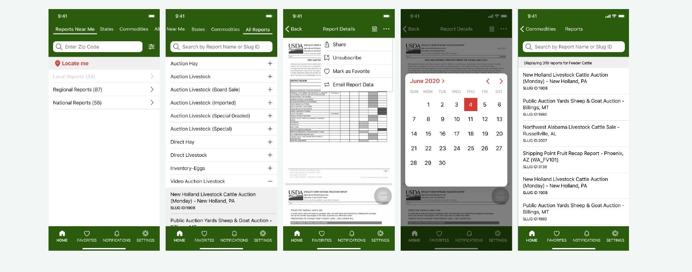
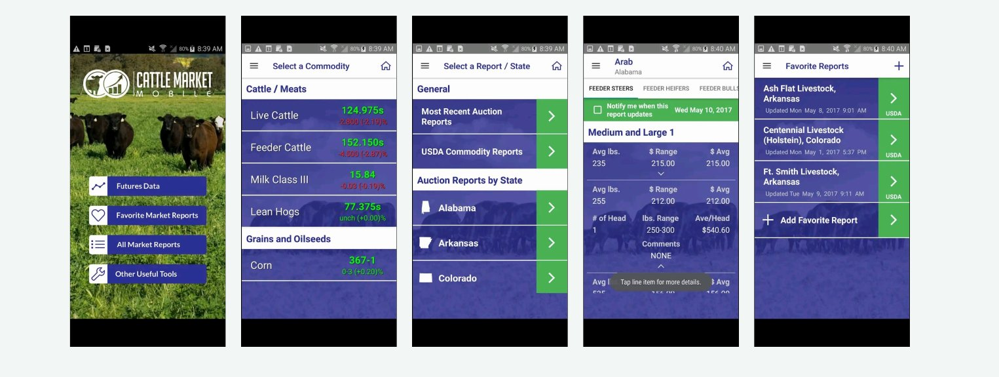
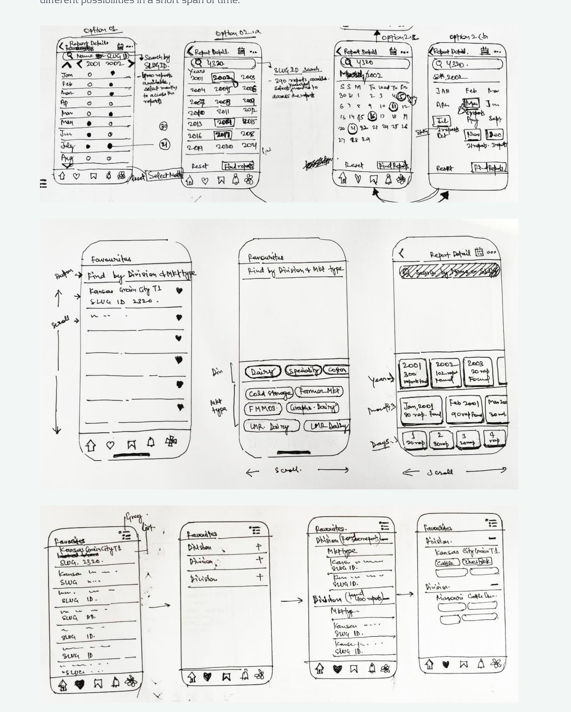
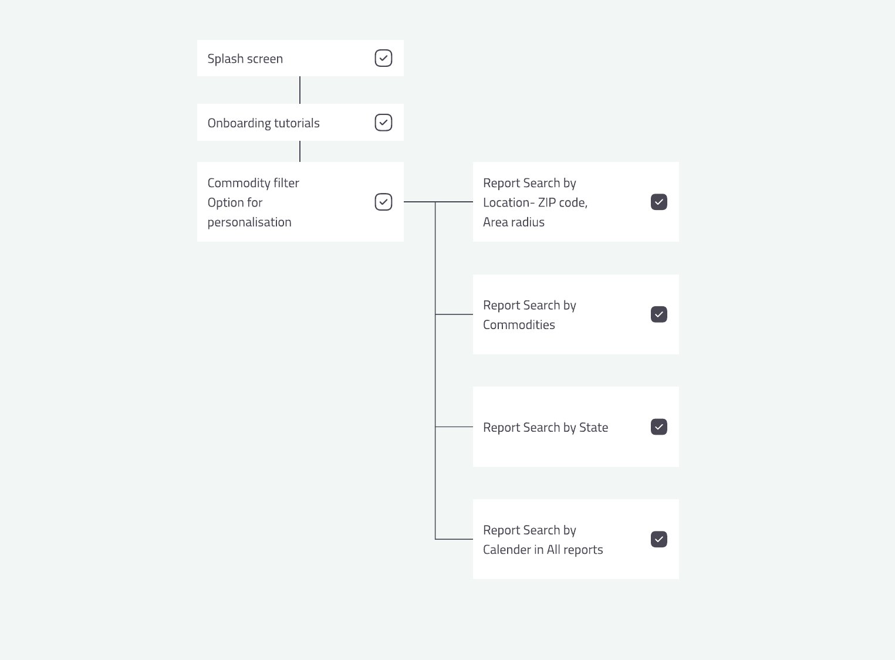
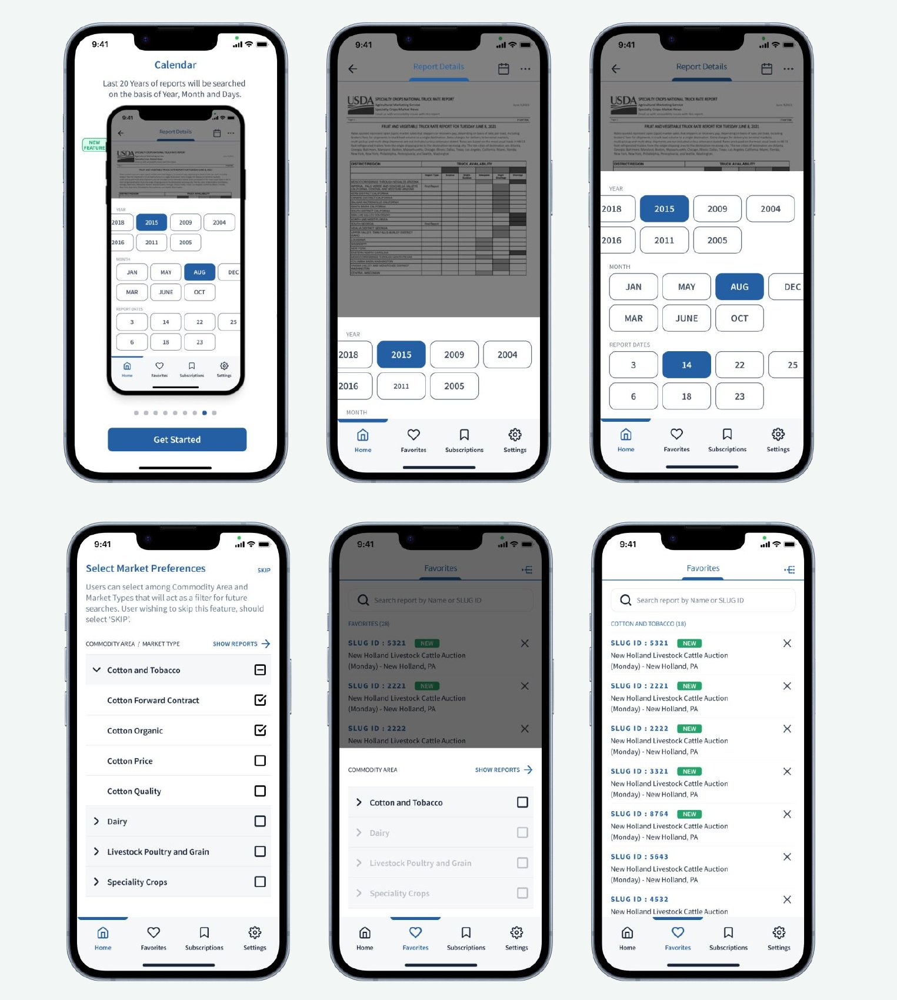
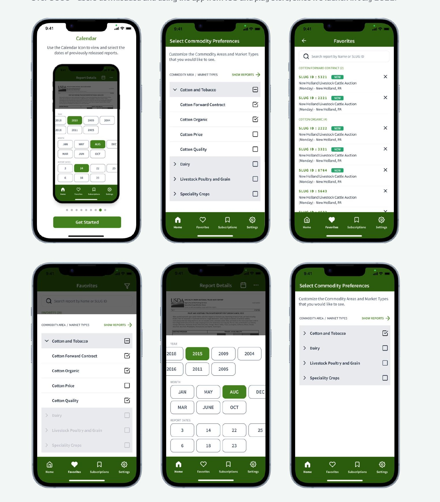
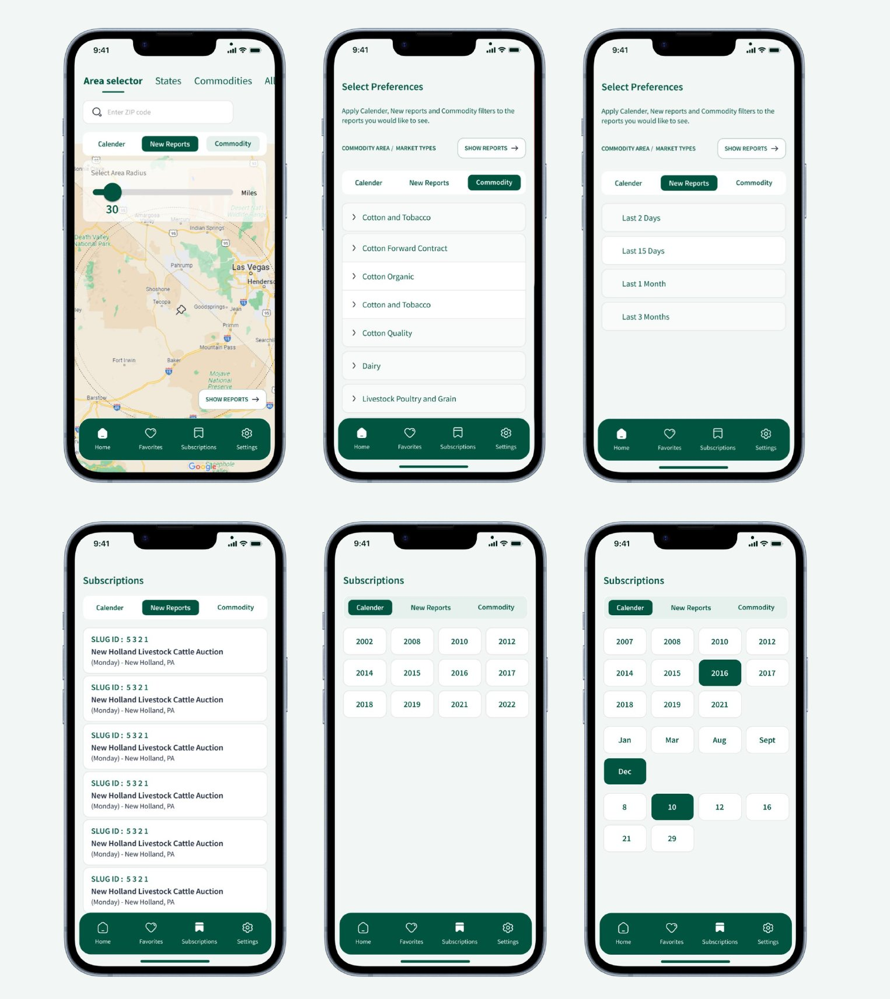

Redesigning how American farmers find market data
The USDA Market News app gives farmers and producers free, unbiased price and sales data — the information they use to decide when to sell, what to charge, and where to ship. Six months after MVP1 launched, the feedback was clear: the data was valuable, but finding it wasn't. Users were confused by the "Reports near me" flow, couldn't filter a growing catalog of reports, and had no way to reach archived data.
At the same time, USDA wanted to expand the app from 800 Livestock, Poultry and Grain reports to nearly 1,500 — adding Cotton & Tobacco, Dairy, and Specialty Crops. A navigation model that was already straining would have collapsed under double the content.
The brief: redesign Market News V2 to absorb 2× the content while making the most-used flows — finding, filtering, and saving reports — dramatically easier, within USDA branding and accessibility standards.
Market News serves working farmers, many in their 50s and older, who are experts in their business but not in mobile apps. Two things from research shaped everything that followed:
Usability testing of MVP1 (4 participants; sessions run by the client's team, synthesis by me) confirmed the pattern: 2 of 4 got lost in "Reports near me" and couldn't find the filter, and participants struggled with the calendar/archive entry point, which sat too close to the "more options" button to tap reliably.

I ran a heuristic evaluation of MVP1 and a competitive analysis of Cattle Market Mobile (the client's benchmark). Out of ten heuristic categories, three issues drove the redesign:

Every major complaint — lost in "near me," 50 unfindable favorites, unreachable archives — was the same problem: no way to narrow a large set. Instead of bolting a filter button onto each screen, I made commodity preferences a first-class concept: users select their Commodity Areas and Market Types once, and that selection persistently scopes Home, Favorites, Subscriptions, and Archive search. A farmer who only cares about Cotton Forward Contracts never wades through Poultry auctions again.
Twenty years of reports were technically accessible but practically unreachable. I sketched multiple archive models — timeline scrub, calendar grid, faceted list — and landed on a stepped Year → Month → Report-date drill-down: it matches how farmers referenced archives in interviews ("Livestock in June 2018") and stays tappable for older users. The calendar-grid option failed exactly the tap-precision problem testing had flagged.


I designed two complete visual directions. The blue direction was minimal, modern — and initially the favorite. I recommended against it: blue has no anchor in USDA's brand or in agriculture, and it's the default of every generic data-viz app, so it made a government agricultural tool look like a fintech dashboard. The green direction kept USDA's identity, and I built the design system around it with AAA/AA contrast ratios to address the color-blindness feedback directly.


V2 launched on iOS and Android in July 2022. [Insert strongest evidence: post-launch retest results, store-rating delta, support-ticket change, or stakeholder quote]

After handoff, I kept exploring on my own time: a map-based area selector with a radius slider (replacing the confusing ZIP + radius input), quick date-range chips ("Last 15 days"), and tabbed Calendar / New Reports / Commodity views inside Subscriptions. These were cut from MVP2 by tech constraints, team bandwidth, and timelines — the right call then — but they're where I'd take MVP3, starting with the map selector, since location entry was the single most confusing interaction in testing.
What I'd do differently: push for testing with more than four participants earlier, and instrument the app at launch so V2's impact could be measured in task success rather than downloads.